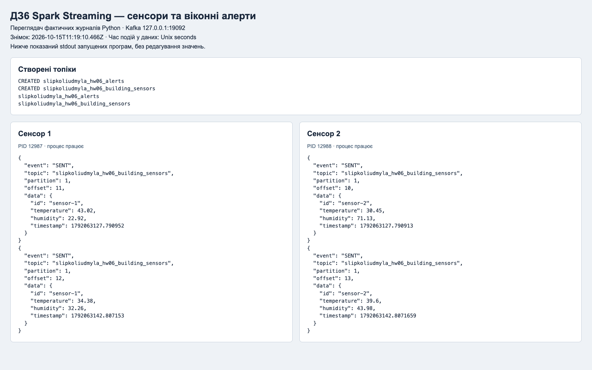
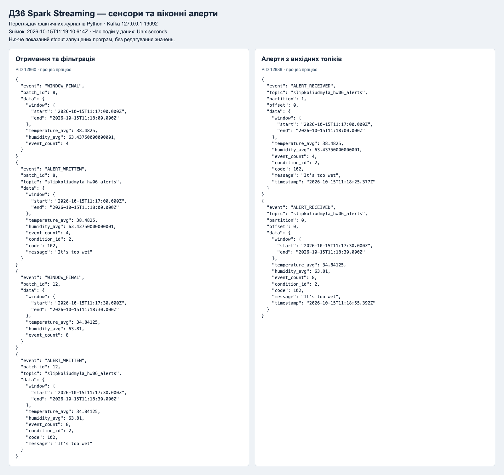

Data Engineering · Сліпко Людмила
ДЗ6 Spark Streaming
Перевірено 20 записів двох сенсорів, вікна 60 секунд із кроком 30 секунд і watermark 10 секунд. У вихідному Kafka-топіку прочитано 3 алертів.
Це опублікований звіт про локальний запуск Python, Kafka та Spark. Програми запускаються за інструкцією у репозиторії.
Чекліст ментора
- ✅ Генерація даних сенсорів.
- ✅ Знаходження середніх значень показників.
- ✅ Побудова фільтраційного механізму, що визначить, які записи є алертами.
- ✅ Запис даних у Kafka-топік.
Перевірено на справжньому Kafka 3.9.1. Докази для кожного пункту наведено в DOCX, скриншотах і сирих журналах у evidence.
Два одночасні сенсори

Обробка та читання алертів

Повна перевірка
{
"result": "PASS",
"source_records": 20,
"sensor_counts": {
"sensor-1": 10,
"sensor-2": 10
},
"window_seconds": 60,
"slide_seconds": 30,
"watermark_seconds": 10,
"finalized_windows": 4,
"alerts": 3,
"codes_in_random_stream": [
102
],
"all_means_match_input": true,
"no_missing_or_duplicate_alerts": true,
"csv_rules_tested": [
101,
102,
103,
104
],
"csv_test_cases": 4,
"last_event_time_utc": "2026-10-15T11:19:47.834Z",
"watermark_utc": "2026-10-15T11:19:37.834Z",
"note": "Only finalized windows are emitted; the final open windows await newer events."
}Що роблять ключові рядки
withWatermark задає допустиме запізнення, а window групує події за їхнім часом. avg знаходить середні температуру й вологість. crossJoin порівнює кожне вікно з усіма правилами CSV, filter залишає збіги, а Kafka sink записує JSON-алерти.